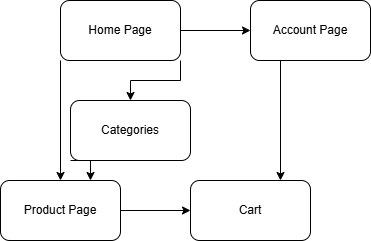
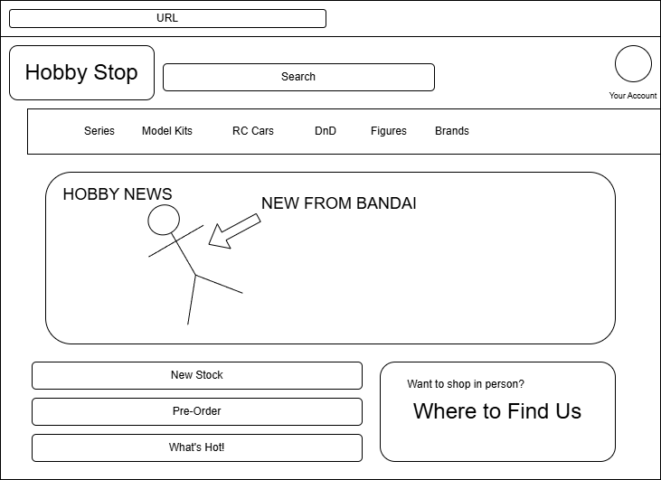

Final Project Proposal
Project Concept
The Website I would like to develop for my final project would be a digital storefront! Specifically for a online front of a hobby shop.
Specifically, I personally enjoy the hobby of model kit building and have spent much of my personal time browsing sites such as this.
An online store front that displays all available products for a hobby store that supports many similar hobbies. From Model kits, to
RC Cars, or even DnD.
Objectives and Goals
The Object of this project will to create a functional layout of a digital store front. This will include a homepage, search page,
user page, and an example product page. The user should be able to search for keywords and browse multiple categories of products
and navigate to the page of individual products. The user could then add those items to a cart for purchase.
Intended Audience
The intended audience is individuals involved in hobbies. These include RC vehciles, minatures, DnD, and Model kits.
Ordered for Priority
- Model Kits
- Minatures
- RC Cars
- DnD
Incoporated Features
Key features required are listed below in no particular order
- Home Page Navigation
- Category Pages
- Cart Functionality
- Product Pages
- Account Page
Site Map

WireFrame

Project Resources
The most important reference would be a few of the hobby sites I have ordered from in the past!
First would be Hobbytown, a site for a shop I have actually visited a few times in real life.
The second would be Gundam Planet. I have never visited this site's physical location
but I have ordered from them quite a few times.
I would use these sites as reference and attempt to Incoporate features that I like from them while avoiding some of the aspects I dislike. For example,
I like how gundam planet has its category menu implemented but its functionality can lead to the menu closing preemptively which I dislike
Jump to top